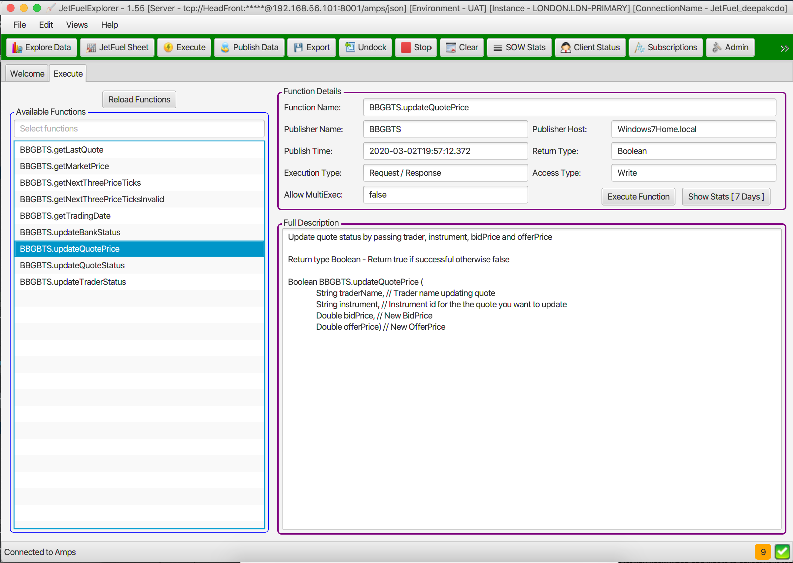
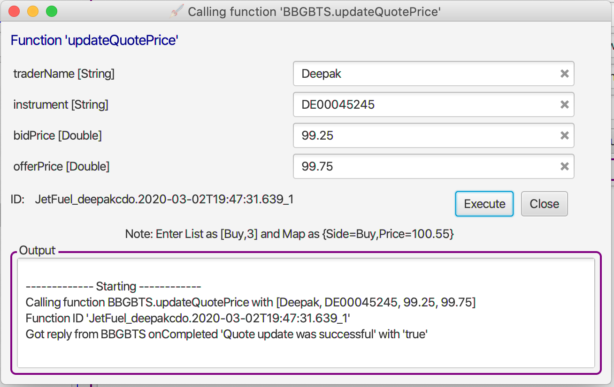
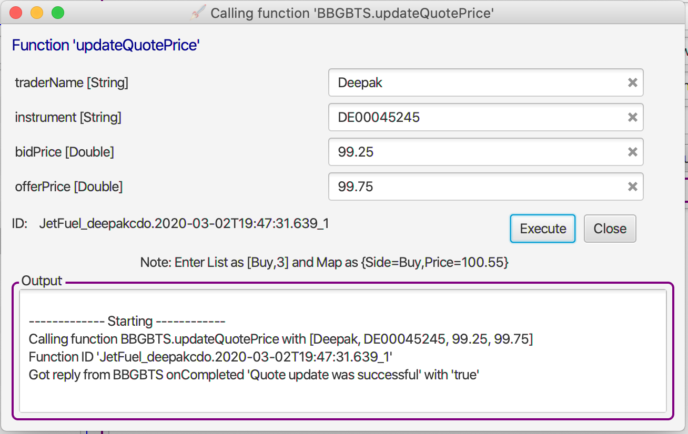
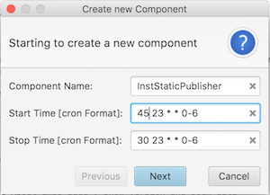
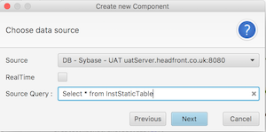
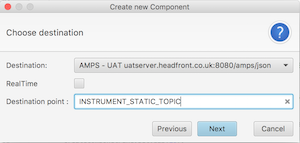
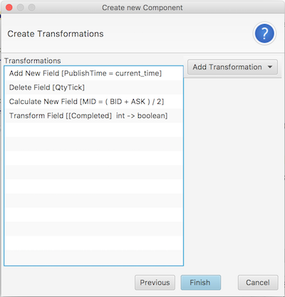
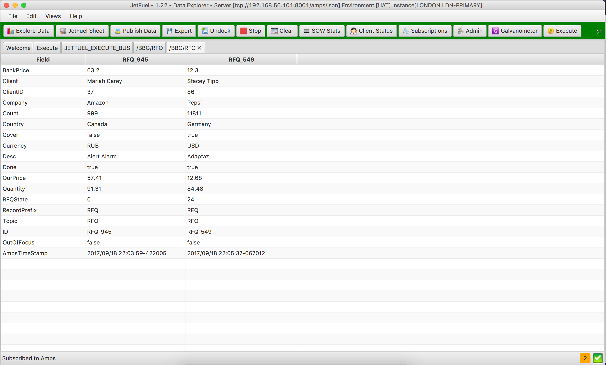

What is JetFuel?
JetFuel is an integration and monitoring tool set used to ease development of distributed application. At the core of JetFuel is a very fast journal based message bus. JetFuel has a few components that allows users to use the tools straight out of the box.Originally JetFuel's aim was to build a full Fixed Income trading platform. This is on hold for the moment, a basic JetFuel sytem would have had:
- Bloomberg price feed (B-Pipe).
- Fix based feeds in and out of bloomberg for quoting and rfq negogiation.
- A few database adapters that will load
static data to the fast bus.
- Basic pricing and risk engine.
- Frontend gui to send quotes and respond to RFQs on Bloomberg.
- They gui will also have fast blotters for viewing trade, positions, prices and risk.
- Basic monitoring tools over the fast bus.
JetFuel Components
Currently JetFuel has five core components built on a fast messaging bus. See below for details.JetFuel - DashBoard
This is system view of JeftFuel. You can see every component running on JetFuel. Here you can see the fast brokers and how they are connected to each other. All publishers and subscribers that are connected or missing from JetFuel are also shown.Below is how JetFuel Dashboard will show connected publishers, subscribers and users. Light grey icons indicate missing users or pulishers

JetFuel - Execute
This library alows Remote Procedure Call (RPC) over a fast journaled message bus. The journaled bus allows users to track every function call and its respose. In brief it allows any component to publish a function on the message bus and any client connected to bus to call the function. This is an extremely flexible model as new components that publish different functions can easily be added or removed. The function describes the list of parameter it takes and the return type. You can test the functions in JetFuel Explorer. Testing functions through the JetFuel Explorer is very useful feature in development and support lifecycles.


JetFuel - Engine
This is a Apache camel based components that gives you the ability to import and export data from a fast message bus. Eg loading instrument static data from database, importing prices from bloomberg, exporting trades to a file for audit etc.Below is an example how easily you could publish data from and to JetFuel Bus in four easy steps. Please note a lot more transformation will be available
  

JetFuel - Launchpad
This component allows you to configure and monitor JetFuel Engines.
Here you can also stop, restart and schedule JetFuel Engines.JetFuel - Explorer
JetFuel Explorer is the first toolset that is being developed. Today it is an excellent query tool which can view data on a very fast bus. Click here to see more details